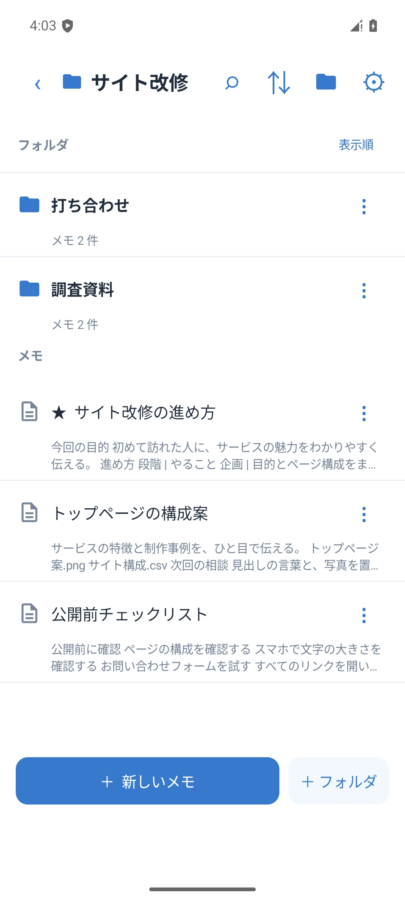
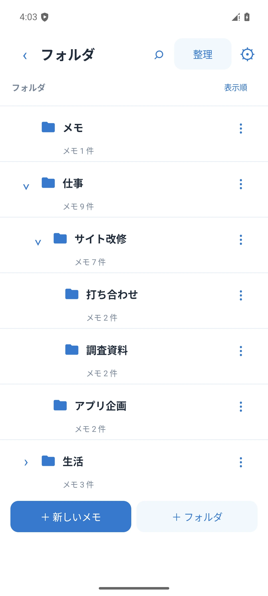
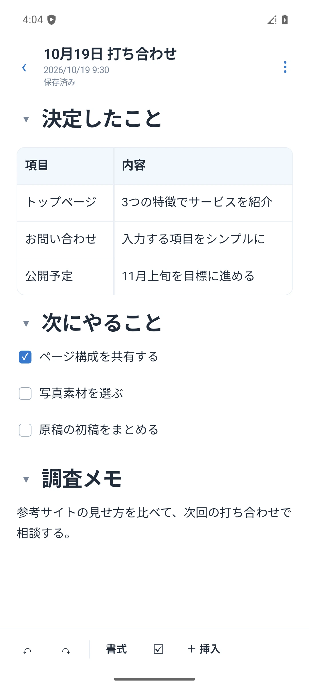
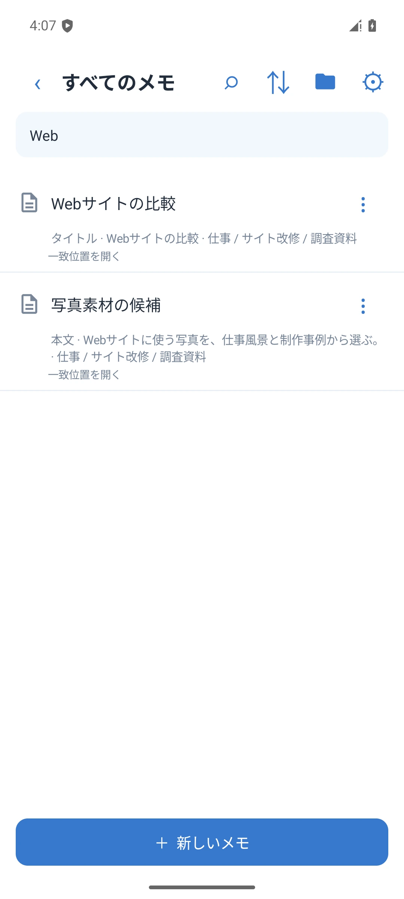
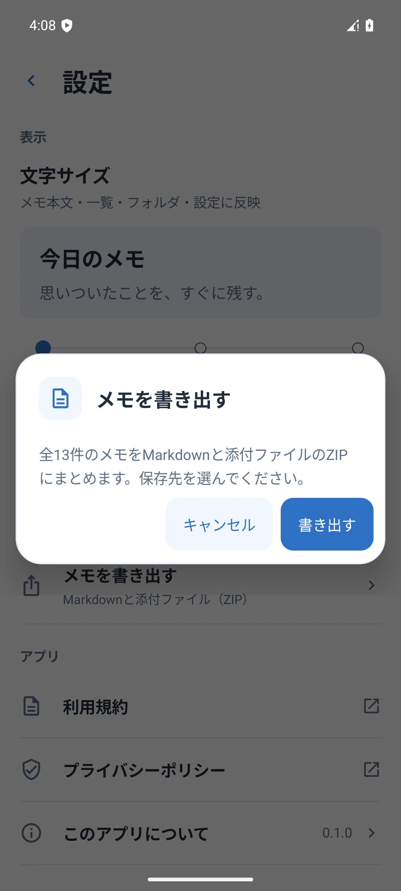

案件ごとに、
メモの置き場所を。
たとえば「仕事」の中に「サイト改修」、さらにその中に「打ち合わせ」。
同じ案件の中でも、議事録や調査資料の置き場所を分けられます。
-
仕事
-
サイト改修
-
打ち合わせ
- 10月19日 打ち合わせ
- 調査資料
-
-
開いたフォルダに、
そのまま書ける。
「打ち合わせ」を開いてメモを書くと、そのフォルダに保存されます。フォルダやメモの場所は、あとから変えられます。
議事録も資料も、
ひとつのメモに。
決定事項は表に、次にやることはチェックリストに。参考画像やファイルも添付できるので、記録と資料を一緒に見返せます。

増えたメモも、
あとから整理。
案件が増えたら、フォルダを移動したり並べ替えたり。長くなったメモは、一部を別のメモに分けられます。元のメモにリンクが残るので、あとからたどれます。
決定事項
公開ページの構成を整理する
参考サイトと機能を比較する
次回の打ち合わせで確認する
探すときも、
持ち出すときも。
置き場所を忘れても、
本文から探せる。
覚えている言葉で、メモのタイトルや本文を検索できます。結果を選ぶと、見つかった箇所を開けます。

フォルダの形ごと、
書き出せる。
整理した階層を保ったまま、メモと添付ファイルをZIPにまとめられます。書き出したメモは、パソコンでもMarkdown形式のファイルとして読めます。

メモは端末内に保存。
アカウント登録は不要。オフラインでも読み書きできます。
よくある質問
どの端末で使えますか？
Android向けのアプリです。お使いの端末に対応しているかは、Google Playで確認できます。
利用料金はかかりますか？
無料で使えます。メモやフォルダの一覧に広告が表示されます。
機種変更でメモを引き継げますか？
対応するAndroid端末では、新しい端末の初期設定で古い端末からデータをコピーすると、メモやフォルダ、添付ファイルを引き継げます。端末間の自動同期には対応していません。
書き出したZIPをアプリに戻せますか？
ZIPは、メモや添付ファイルをアプリの外で読むためのものです。StrunoteにZIPを読み込む機能はありません。